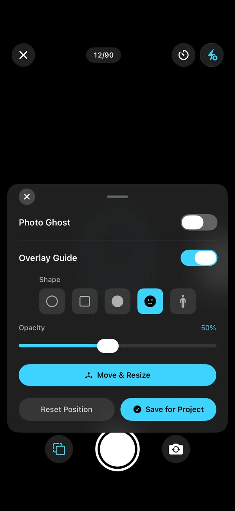
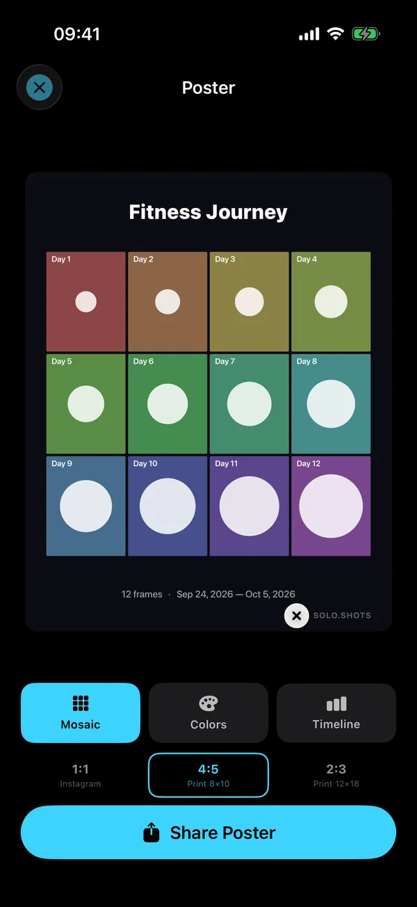
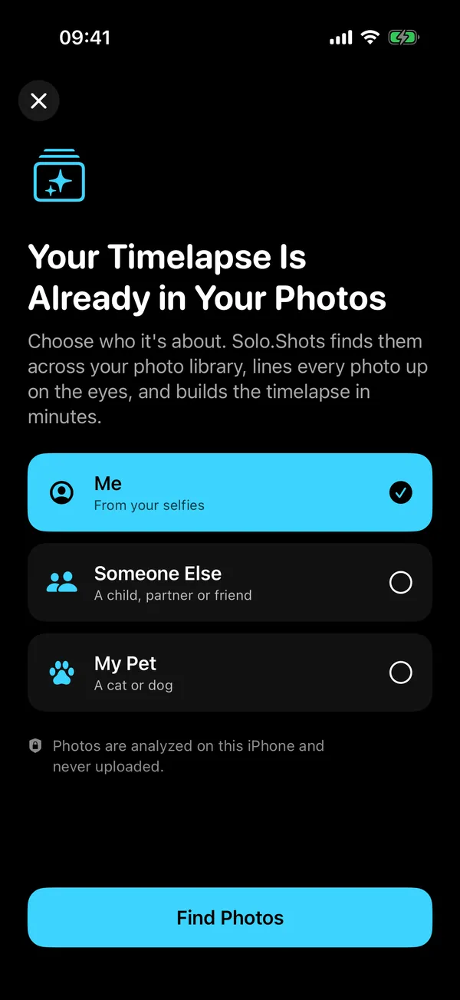

For expecting parents
Forty weeks in forty seconds. Then your baby's first year.
Solo.Shots is a progress camera for iPhone and iPad. It helps you line up every weekly bump photo with the last one, reminds you every Monday once you switch the reminder on, and turns the series into a video. After the birth, the same habit becomes your baby's first year, and you can also make a face-aligned timelapse of your child from photos you've already taken.

Scan with your
iPhone camera
- Free with ads
- Premium optional
- No account
- iOS 17.6+
- 9 languages

The short version
Take one side-on photo a week in the same spot. Switch on the Photo Ghost and Solo.Shots shows last week's photo as a see-through ghost; the level buzzes when the phone's angle matches, and the reminder (once on) nudges you every Monday. At the end, one tap makes a bump video (forty weeks at one second each is forty seconds). Then start Baby's First Year in the same spot. For the spot, the pose and shooting alone, see the bump photo guide.
What will we end up with?
- A bump video that lines upA weekly project with a 40-photo goal; switch on the ghost of last week's photo and a level that matches the angle.
- A nudge every MondayA reminder at your time, and a Lock Screen widget that says when this week's photo is due.
- Week or date stampsWeek N counts from your first photo; the Date stamp shows real dates.
- A poster for the nurseryMosaic, Colors or Timeline, sized for 8×10 or 12×18 prints.
- Baby's first yearA weekly project with a 52-photo goal: one short film of the year.
- Your child, from photos you already tookA separate timelapse of your child's face from your library, lined up on the eyes, on your iPhone (faces, not bump photos).
How does it work, from bump to baby?
Three projects, one habit, and none of them needs more than a minute a week.
- During pregnancy: choose Pregnancy when Solo.Shots first asks what you're tracking (or create a weekly project yourself). Take one side-on photo a week. The bump photo guide covers the spot, the pose and shooting alone.
- After the birth: start a Baby's First Year project, weekly with a 52-photo goal, on the same blanket or chair every week.
- Any time: make a timelapse from photos you already have. Choose Someone Else, tap your child, and Solo.Shots walks back through your library and lines the faces up.


Weekly or monthly photos for the first year?
Weekly if you can, monthly if you can't. Both make a lovely film; weekly shows the fast newborn changes, monthly is easier to keep up.
| Weekly | Monthly | |
|---|---|---|
| Photos in year one | 52 | 12 |
| Video length | 13 s at 0.25 s per photo | 12 s at 1 s per photo |
| Reminder in Solo.Shots | Every Monday, at your time | On the 1st of each month (for month-birthday photos, set your own reminder) |
| Best for | Seeing the newborn weeks change | Busy months, simple routines |
Is it private enough for photos of our baby?
Your photos stay yours. Solo.Shots has no account, no developer servers and no analytics SDK. Photos are stored on your iPhone; with Premium iCloud Backup, they're also kept in your own private iCloud. The timelapse-from-your-photos feature analyzes faces on the iPhone and never uploads them.
One honest caveat: the free version shows Google AdMob ads, and the App Store privacy label lists data used for advertising. Ads never get your photos. The privacy policy explains it in plain words. Nothing is posted anywhere unless you share it.
What's free, and what's Premium?
| Free | Premium | |
|---|---|---|
| Projects | First project free; up to 3 more, each unlocked by a short ad | Unlimited |
| Photos per project | Up to 100 (a 40-week bump and a 52-week year both fit) | Unlimited |
| Video | 1080p after a short ad, small watermark; 4K once (a short ad unlocks it) | 4K every time, no ads; watermark can be switched off |
| Ads | Yes | None |
| iCloud Backup & Sync | No | Yes, in your private iCloud |
| Timelapse from your photos | Build and preview | Save as a project and export |
Premium is an optional monthly subscription; see the current price on the App Store. There is no yearly plan.
What about all the other baby photos?
They'll arrive, mostly blurry, mostly identical. Solo.Swipe, another app of mine, turns camera-roll cleanup into a 5-minute daily swipe session, so the good photos are easy to find when you make your timelapse.
FAQ
Can my partner add photos to the same project?
Not to the same project: Solo.Shots has no accounts or sharing, so projects live on the device you take them on. With Premium iCloud Backup & Sync, your projects are kept in your own private iCloud and come back on a new iPhone signed in to the same Apple Account.
Is Solo.Shots a pregnancy app?
No. It doesn't track due dates or give medical or baby-development information. It's a camera that helps you keep your weekly photos lined up and turns them into a video. For pregnancy information, rely on your midwife, doctor or maternity service.
What if our baby arrives early?
Nothing breaks. The 40-photo goal is a target, not a deadline. You can change it (10 to 100 photos) and start Baby's First Year whenever you're ready.
Can I print the poster?
Yes. Posters come in 1:1 for Instagram, 4:5 for an 8×10 print and 2:3 for a 12×18 print, as a Mosaic, Colors or Timeline design.